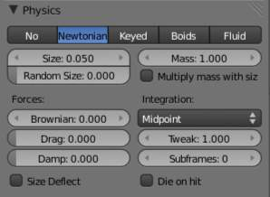

Newtonian 物理¶
These are the “normal” particle physics. Particles start their life with the specified initial velocities and angular velocities, and move according to Newtonian forces. The response to environment and to forces is computed differently, according to any given integrator chosen by the animator.
Forces¶

Newtonian 物理 设置.
- Brownian
- Specify the amount of Brownian motion. Brownian motion adds random motion to the particles based on a Brownian noise field. This is nice to simulate small, random wind forces.
- Drag
- A force that reduces particle velocity in relation to it’s speed and size (useful in order to simulate Air-Drag or Water-Drag).
- Damp
- Reduces particle velocity (deceleration, friction, dampening).
Collision¶
- Size Deflect
- Use the particle size in deflections.
- Die on Hit
- Kill particle when it hits a deflector object.
Integration¶
Integrators are a set of mathematical methods available to calculate the movement of particles. The following guidelines will help to choose a proper integrator, according to the behavior aimed at by the animator.
- Euler
- Also known as “Forward Euler”. Simplest integrator. Very fast but also with less exact results. If no dampening is used, particles get more and more energy over time. For example, bouncing particles will bounce higher and higher each time. Should not be confused with “Backward Euler” (not implemented) which has the opposite feature, energies decrease over time, even with no dampening. Use this integrator for short simulations or simulations with a lot of dampening where speedy calculations is more important than accuracy.
- Varlet
- Very fast and stable integrator, energy is conserved over time with very little numerical dissipation.
- Midpoint
- Also known as “2nd order Runge-Kutta”. Slower than Euler but much more stable. If the acceleration is constant (no drag for example), it is energy conservative. It should be noted that in example of the bouncing particles, the particles might bounce higher than they started once in a while, but this is not a trend. This integrator is a generally good integrator for use in most cases.
- RK4
- Short for “4th order Runge-Kutta”. Similar to Midpoint but slower and in most cases more accurate. It is energy conservative even if the acceleration is not constant. Only needed in complex simulations where Midpoint is found not to be accurate enough.
Frame 设置¶
- Timestep
- The simulation time step per frame.
- Subframes
- Subframes to simulate for improved stability and finer granularity in simulations. Use higher values for faster moving particles.